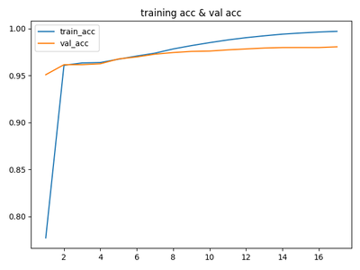
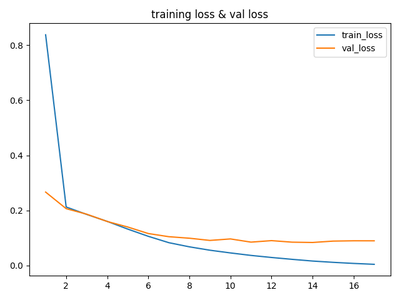

概述
在NLP的序列标注任务里面，NER是基础的上游任务，也就意味着，业界许多垂直领域的NLP项目，NER是绕不开的任务。今天的这篇博客，笔者不想涉及深入的算法和数学知识，仅就在代码实现层面，对有监督的NER训练，做一些介绍。对于NER一知半解的读者，可以移步笔者的另一篇博文——《命名实体识别概述》。
技能要求
- Python 3
- Keras框架
- Log、Matplotlib、TensorFlow等辅助工具
项目目标
- 根据已经标记的NER数据集，训练得到NER模型；
- 用NER模型，预测新数据；
项目目录
1 | ➜ Keras-NER tree |
项目
数据集
- 训练的原始数据
1 | 新华社 北京 六月 十日 电 中宣部 、 教育部 、 团中央 和 全国学联 近日 联合 发出通知 ， 决定 今年 暑期 继续 深入开展 大中学生 志愿者 文化 、 科技 、 卫生 『 三下乡 』 活动 。 |
- 原始数据对应的标记数据：
1 | B-ORG B-LOC B-TIME I-TIME O B-ORG O B-ORG O B-ORG O B-ORG B-TIME O O O O B-TIME I-TIME O O B-ROLE I-ROLE O O O O O O O O O O |
- 预测的原始数据：
1 | 进一步 研究 已经 发现 了 有关 这个 “ 钥匙 ” 的 功能 及其 薄弱环节 。 |
模型搭建
1 | def __build_model__(self): |
这里要特别注意：
Embedding的三个参数，input_dim是指Embedding层要接收的特征维度，比如，在本项目中就是要输入的前MAX_FEATURE个出现频率较高的词汇。output_dim是输出给下层的维度，input_length则是对于每个sample，截取前MAX_LEN个词汇作为输入，不足的会用0填充（也可以自己指定其他数字，默认是0）。- CRF的算法没有在keras「原装包」中，需要另外导入
keras-contrib包。第一个接受的参数是输出的类型数量，这里+1的是因为在对数据进行填充（padding）的时候，额外引进了填充的类别。 - 损失函数和指标都选用了
CRF自带的函数。
生成数据
1 | def generate_data(): |
最主要的地方是利用了Keras的Tokenizer，对词汇进行唯一标识。
项目成果
训练准确度：

预测结果：
1 | ['进一步(o)', '研究(o)', '已经(o)', '发现(o)', '了(o)', '有关(o)', '这个(o)', '“(o)', '钥匙(o)', '”(o)', '的(o)', '功能(o)', '及其(o)', '薄弱环节(o)', '。(o)'] |